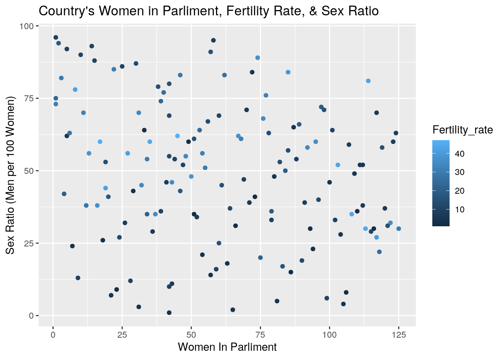

###Introduction!!!!
I chose to datasets that focused on different countries’ statistics. The reason I chose these datasets is because I thought it would be really interesting to see the correlation different aspects of countries globally rather than just picking something that was in one specific area and based off one specific culture, to be able to see universal trends. So my data set under CP came from the UN data website which has collected from more than 20 International statistical sources that compiled regularly by the statistics and population divisions of the United Nations. My CD date came from HELP International which is an international humanitarian group that focuses on combating poverty and providing people with basic amenities and relief during disasters and natural calamities. Both data have been reviewed by a crowdsourced platform, and have been cited in many publications. Both datasets contain a lot of variables but the main focus of the variables are health, trade, women, income, and population. I’m personally really interested in the women, population, and income columns; I am expecting to see low fertility rates in areas where women have higher education, and areas with large GDP to have more women in Parliament.
If the datasets are not tidy, you will need to reshape them so that every observation has its own row and every variable its own column. If the datasets are both already tidy, you will make them untidy with pivot_wider()/spread() and then tidy them again with pivot_longer/gather() to demonstrate your use of the functions. It’s fine to wait until you have your descriptives to use these functions (e.g., you might want to pivot_wider() to rearrange the data to make your descriptive statistics easier to look at); it’s fine long as you use them at least once!
Depending on your datasets, it might be a good idea to do this before joining. For example, if you have a dataset you like with multiple measurements per year, but you want to join by year, you could average over your numeric variables to get means/year, do counts for your categoricals to get a counts/year, etc.
If your data sets are already tidy, demonstrate the use of pivot_longer()/gather() and pivot_wider()/spread() on all or part of your data at some point in this document (e.g., after you have generated summary statistics in part 3, make a table of them wide instead of long).
library(readxl)
CD <- read_excel("CD.xlsx")
CP <- read_excel("CP.xlsx")
# View(CP)
library(tidyr)
# untidying data and retidying it since the data was already
# clean:
uncleanCD <- CD %>% pivot_longer(!country, names_to = "Catagories",
values_to = "Value") #messy CD
uncleanCD %>% pivot_wider(names_from = Catagories, values_from = Value) #clean CD## # A tibble: 167 x 10
## country child_mort exports health imports income inflation life_expec
## <chr> <dbl> <dbl> <dbl> <dbl> <dbl> <dbl> <dbl>
## 1 Afghan… 90.2 10 7.58 44.9 1610 9.44 56.2
## 2 Albania 16.6 28 6.55 48.6 9930 4.49 76.3
## 3 Algeria 27.3 38.4 4.17 31.4 12900 16.1 76.5
## 4 Angola 119 62.3 2.85 42.9 5900 22.4 60.1
## 5 Antigu… 10.3 45.5 6.03 58.9 19100 1.44 76.8
## 6 Argent… 14.5 18.9 8.1 16 18700 20.9 75.8
## 7 Armenia 18.1 20.8 4.4 45.3 6700 7.77 73.3
## 8 Austra… 4.8 19.8 8.73 20.9 41400 1.16 82
## 9 Austria 4.3 51.3 11 47.8 43200 0.873 80.5
## 10 Azerba… 39.2 54.3 5.88 20.7 16000 13.8 69.1
## # … with 157 more rows, and 2 more variables: total_fer <dbl>, gdpp <dbl>uncleanCP <- CP %>% pivot_longer(cols = Region:`Surface area (km2)`,
names_to = "Catagories", values_to = "Value") #messy CP
uncleanCP %>% pivot_wider(names_from = Catagories, values_from = Value) #clean CP## # A tibble: 229 x 50
## country `Population in … `Population den… `Sex ratio (m p… `GDP: Gross dom…
## <chr> <dbl> <dbl> <dbl> <dbl>
## 1 Afghan… 35530 54.4 106. 20270
## 2 Albania 2930 107. 102. 11541
## 3 Algeria 41318 17.3 102 164779
## 4 Americ… 56 278. 104. -99
## 5 Andorra 77 164. 102. 2812
## 6 Angola 29784 23.9 96.2 117955
## 7 Anguil… 15 166. 97.6 320
## 8 Antigu… 102 232. 92.3 1356
## 9 Argent… 44271 16.2 95.9 632343
## 10 Armenia 2930 103. 88.8 10529
## # … with 219 more rows, and 45 more variables: `GDP growth rate (annual %,
## # const. 2005 prices)` <chr>, `GDP per capita (current US$)` <dbl>, `Economy:
## # Agriculture (% of GVA)` <chr>, `Economy: Industry (% of GVA)` <dbl>,
## # `Economy: Services and other activity (% of GVA)` <dbl>, `Employment:
## # Agriculture (% of employed)` <chr>, `Employment: Industry (% of
## # employed)` <chr>, `Employment: Services (% of employed)` <chr>,
## # `Unemployment (% of labour force)` <chr>, `Labour force participation
## # (female/male pop. %)` <chr>, `Agricultural production index
## # (2004-2006=100)` <dbl>, `Food production index (2004-2006=100)` <dbl>,
## # `International trade: Exports (million US$)` <chr>, `International trade:
## # Imports (million US$)` <chr>, `International trade: Balance (million
## # US$)` <chr>, `Balance of payments, current account (million US$)` <chr>,
## # `Population growth rate (average annual %)` <chr>, `Urban population (% of
## # total population)` <dbl>, `Urban population growth rate (average annual
## # %)` <chr>, `Fertility rate, total (live births per woman)` <chr>, `Life
## # expectancy at birth (females/males, years)` <chr>, `Population age
## # distribution (0-14 / 60+ years, %)` <chr>, `International migrant stock
## # (000/% of total pop.)` <chr>, `Refugees and others of concern to UNHCR (in
## # thousands)` <chr>, `Infant mortality rate (per 1000 live births` <chr>,
## # `Health: Total expenditure (% of GDP)` <dbl>, `Health: Physicians (per 1000
## # pop.)` <chr>, `Education: Government expenditure (% of GDP)` <chr>,
## # `Education: Primary gross enrol. ratio (f/m per 100 pop.)` <chr>,
## # `Education: Secondary gross enrol. ratio (f/m per 100 pop.)` <chr>,
## # `Education: Tertiary gross enrol. ratio (f/m per 100 pop.)` <chr>, `Seats
## # held by women in national parliaments %` <dbl>, `Mobile-cellular
## # subscriptions (per 100 inhabitants)...40` <chr>, `Mobile-cellular
## # subscriptions (per 100 inhabitants)...41` <chr>, `Individuals using the
## # Internet (per 100 inhabitants)` <dbl>, `Threatened species (number)` <chr>,
## # `Forested area (% of land area)` <chr>, `CO2 emission estimates (million
## # tons/tons per capita)` <dbl>, `Energy production, primary
## # (Petajoules)` <dbl>, `Energy supply per capita (Gigajoules)` <chr>, `Pop.
## # using improved drinking water (urban/rural, %)` <chr>, `Pop. using improved
## # sanitation facilities (urban/rural, %)` <chr>, `Net Official Development
## # Assist. received (% of GNI)` <dbl>, Region <chr>, `Surface area
## # (km2)` <chr># ez money, but since these are back to being the same
# datasets, I'll be using the og datasets for the rest of the
# codeJoin your 2+ separate data sources into a single dataset based on a common ID variable! If you can’t find a good pair datasets to join, you may split one main dataset into two different datasets with a common ID variable in each, and then join them back together based on that common ID, but this is obviously less than ideal.
library(dplyr)
totaldata1 <- inner_join(CD, CP, by = "country")
# *In the original datasets, CD had 167 observations, while
# CP had 229 observations. However in the joined datset there
# is only 146 observations. This is because when the two
# datasets were joined using inner_join observations were
# dropped. Since the datasets were joined by country, the
# dropped observations were countries. The observations that
# were dropped were countries in each dataset that were not
# in the other dataset. I specifically chose inner_join
# because I only wanted to retain rows in both datasets, so I
# could not use left/right join. I also wanted rows with all
# values so I could not use full join either. This is why I
# picked inner_join.Create summary statistics
Use all six core dplyr functions (filter, select, arrange, group_by, mutate, summarize) to manipulate and explore your dataset. For mutate, create a new variable that is a function of at least one other variable, preferably using a dplyr vector function (see dplyr cheatsheet). It’s totally fine to use the _if, _at, _all versions of mutate/summarize instead (indeed, it is encouraged if you have lots of variables)
Create summary statistics (mean, sd, var, n, quantile, min, max, n_distinct, cor, etc) for each of your numeric variables both overall and after grouping by one of your categorical variables (either together or one-at-a-time; if you have two categorical variables, try to include at least one statistic based on a grouping of two categorical variables simultaneously). If you do not have any categorical variables, create one using mutate (e.g., with case_when or ifelse) to satisfy the group_by requirements above. Ideally, you will find a way to show these summary statistics in an easy-to-read table (e.g., by reshaping). (You might explore the kable package for making pretty tables!) If you have lots of numeric variables (e.g., 10+), or your categorical variables have too many categories, just pick a few (either numeric variables or categories of a categorical variable) and summarize based on those. It would be a good idea to show a correlation matrix for your numeric variables (you will need it to make one of your plots).
# filter
filter(totaldata1, life_expec > 70)## # A tibble: 88 x 59
## country child_mort exports health imports income inflation life_expec
## <chr> <dbl> <dbl> <dbl> <dbl> <dbl> <dbl> <dbl>
## 1 Albania 16.6 28 6.55 48.6 9930 4.49 76.3
## 2 Algeria 27.3 38.4 4.17 31.4 12900 16.1 76.5
## 3 Antigu… 10.3 45.5 6.03 58.9 19100 1.44 76.8
## 4 Argent… 14.5 18.9 8.1 16 18700 20.9 75.8
## 5 Armenia 18.1 20.8 4.4 45.3 6700 7.77 73.3
## 6 Austra… 4.8 19.8 8.73 20.9 41400 1.16 82
## 7 Austria 4.3 51.3 11 47.8 43200 0.873 80.5
## 8 Bahamas 13.8 35 7.89 43.7 22900 -0.393 73.8
## 9 Bahrain 8.6 69.5 4.97 50.9 41100 7.44 76
## 10 Bangla… 49.4 16 3.52 21.8 2440 7.14 70.4
## # … with 78 more rows, and 51 more variables: total_fer <dbl>, gdpp <dbl>,
## # Region <chr>, `Surface area (km2)` <chr>, `Population in thousands
## # (2017)` <dbl>, `Population density (per km2, 2017)` <dbl>, `Sex ratio (m
## # per 100 f, 2017)` <dbl>, `GDP: Gross domestic product (million current
## # US$)` <dbl>, `GDP growth rate (annual %, const. 2005 prices)` <chr>, `GDP
## # per capita (current US$)` <dbl>, `Economy: Agriculture (% of GVA)` <chr>,
## # `Economy: Industry (% of GVA)` <dbl>, `Economy: Services and other activity
## # (% of GVA)` <dbl>, `Employment: Agriculture (% of employed)` <chr>,
## # `Employment: Industry (% of employed)` <chr>, `Employment: Services (% of
## # employed)` <chr>, `Unemployment (% of labour force)` <chr>, `Labour force
## # participation (female/male pop. %)` <chr>, `Agricultural production index
## # (2004-2006=100)` <dbl>, `Food production index (2004-2006=100)` <dbl>,
## # `International trade: Exports (million US$)` <chr>, `International trade:
## # Imports (million US$)` <chr>, `International trade: Balance (million
## # US$)` <chr>, `Balance of payments, current account (million US$)` <chr>,
## # `Population growth rate (average annual %)` <chr>, `Urban population (% of
## # total population)` <dbl>, `Urban population growth rate (average annual
## # %)` <chr>, `Fertility rate, total (live births per woman)` <chr>, `Life
## # expectancy at birth (females/males, years)` <chr>, `Population age
## # distribution (0-14 / 60+ years, %)` <chr>, `International migrant stock
## # (000/% of total pop.)` <chr>, `Refugees and others of concern to UNHCR (in
## # thousands)` <chr>, `Infant mortality rate (per 1000 live births` <chr>,
## # `Health: Total expenditure (% of GDP)` <dbl>, `Health: Physicians (per 1000
## # pop.)` <chr>, `Education: Government expenditure (% of GDP)` <chr>,
## # `Education: Primary gross enrol. ratio (f/m per 100 pop.)` <chr>,
## # `Education: Secondary gross enrol. ratio (f/m per 100 pop.)` <chr>,
## # `Education: Tertiary gross enrol. ratio (f/m per 100 pop.)` <chr>, `Seats
## # held by women in national parliaments %` <dbl>, `Mobile-cellular
## # subscriptions (per 100 inhabitants)...40` <chr>, `Mobile-cellular
## # subscriptions (per 100 inhabitants)...41` <chr>, `Individuals using the
## # Internet (per 100 inhabitants)` <dbl>, `Threatened species (number)` <chr>,
## # `Forested area (% of land area)` <chr>, `CO2 emission estimates (million
## # tons/tons per capita)` <dbl>, `Energy production, primary
## # (Petajoules)` <dbl>, `Energy supply per capita (Gigajoules)` <chr>, `Pop.
## # using improved drinking water (urban/rural, %)` <chr>, `Pop. using improved
## # sanitation facilities (urban/rural, %)` <chr>, `Net Official Development
## # Assist. received (% of GNI)` <dbl>names(totaldata1)[18] <- "GDP_per_capita"
filter(totaldata1, life_expec > 70 & GDP_per_capita > 5000)## # A tibble: 69 x 59
## country child_mort exports health imports income inflation life_expec
## <chr> <dbl> <dbl> <dbl> <dbl> <dbl> <dbl> <dbl>
## 1 Antigu… 10.3 45.5 6.03 58.9 19100 1.44 76.8
## 2 Argent… 14.5 18.9 8.1 16 18700 20.9 75.8
## 3 Austra… 4.8 19.8 8.73 20.9 41400 1.16 82
## 4 Austria 4.3 51.3 11 47.8 43200 0.873 80.5
## 5 Bahamas 13.8 35 7.89 43.7 22900 -0.393 73.8
## 6 Bahrain 8.6 69.5 4.97 50.9 41100 7.44 76
## 7 Barbad… 14.2 39.5 7.97 48.7 15300 0.321 76.7
## 8 Belarus 5.5 51.4 5.61 64.5 16200 15.1 70.4
## 9 Belgium 4.5 76.4 10.7 74.7 41100 1.88 80
## 10 Brazil 19.8 10.7 9.01 11.8 14500 8.41 74.2
## # … with 59 more rows, and 51 more variables: total_fer <dbl>, gdpp <dbl>,
## # Region <chr>, `Surface area (km2)` <chr>, `Population in thousands
## # (2017)` <dbl>, `Population density (per km2, 2017)` <dbl>, `Sex ratio (m
## # per 100 f, 2017)` <dbl>, `GDP: Gross domestic product (million current
## # US$)` <dbl>, `GDP growth rate (annual %, const. 2005 prices)` <chr>,
## # GDP_per_capita <dbl>, `Economy: Agriculture (% of GVA)` <chr>, `Economy:
## # Industry (% of GVA)` <dbl>, `Economy: Services and other activity (% of
## # GVA)` <dbl>, `Employment: Agriculture (% of employed)` <chr>, `Employment:
## # Industry (% of employed)` <chr>, `Employment: Services (% of
## # employed)` <chr>, `Unemployment (% of labour force)` <chr>, `Labour force
## # participation (female/male pop. %)` <chr>, `Agricultural production index
## # (2004-2006=100)` <dbl>, `Food production index (2004-2006=100)` <dbl>,
## # `International trade: Exports (million US$)` <chr>, `International trade:
## # Imports (million US$)` <chr>, `International trade: Balance (million
## # US$)` <chr>, `Balance of payments, current account (million US$)` <chr>,
## # `Population growth rate (average annual %)` <chr>, `Urban population (% of
## # total population)` <dbl>, `Urban population growth rate (average annual
## # %)` <chr>, `Fertility rate, total (live births per woman)` <chr>, `Life
## # expectancy at birth (females/males, years)` <chr>, `Population age
## # distribution (0-14 / 60+ years, %)` <chr>, `International migrant stock
## # (000/% of total pop.)` <chr>, `Refugees and others of concern to UNHCR (in
## # thousands)` <chr>, `Infant mortality rate (per 1000 live births` <chr>,
## # `Health: Total expenditure (% of GDP)` <dbl>, `Health: Physicians (per 1000
## # pop.)` <chr>, `Education: Government expenditure (% of GDP)` <chr>,
## # `Education: Primary gross enrol. ratio (f/m per 100 pop.)` <chr>,
## # `Education: Secondary gross enrol. ratio (f/m per 100 pop.)` <chr>,
## # `Education: Tertiary gross enrol. ratio (f/m per 100 pop.)` <chr>, `Seats
## # held by women in national parliaments %` <dbl>, `Mobile-cellular
## # subscriptions (per 100 inhabitants)...40` <chr>, `Mobile-cellular
## # subscriptions (per 100 inhabitants)...41` <chr>, `Individuals using the
## # Internet (per 100 inhabitants)` <dbl>, `Threatened species (number)` <chr>,
## # `Forested area (% of land area)` <chr>, `CO2 emission estimates (million
## # tons/tons per capita)` <dbl>, `Energy production, primary
## # (Petajoules)` <dbl>, `Energy supply per capita (Gigajoules)` <chr>, `Pop.
## # using improved drinking water (urban/rural, %)` <chr>, `Pop. using improved
## # sanitation facilities (urban/rural, %)` <chr>, `Net Official Development
## # Assist. received (% of GNI)` <dbl># select
select(totaldata1, 1, 8, 15, 18, 48)## # A tibble: 146 x 5
## country life_expec `Sex ratio (m per… GDP_per_capita `Seats held by women…
## <chr> <dbl> <dbl> <dbl> <dbl>
## 1 Afghanist… 56.2 106. 623. 27.7
## 2 Albania 76.3 102. 3984. 22.9
## 3 Algeria 76.5 102 4154. 31.6
## 4 Angola 60.1 96.2 4714. 38.2
## 5 Antigua a… 76.8 92.3 14764. 11.1
## 6 Argentina 75.8 95.9 14564. 38.9
## 7 Armenia 73.3 88.8 3489. 9.9
## 8 Australia 82 99.3 51352. 28.7
## 9 Austria 80.5 96.2 44118. 30.6
## 10 Azerbaijan 69.1 99.3 5439. 16.8
## # … with 136 more rows# arange
arrange(totaldata1, desc(GDP_per_capita))## # A tibble: 146 x 59
## country child_mort exports health imports income inflation life_expec
## <chr> <dbl> <dbl> <dbl> <dbl> <dbl> <dbl> <dbl>
## 1 Luxemb… 2.8 175 7.77 142 91700 3.62 81.3
## 2 Switze… 4.5 64 11.5 53.3 55500 0.317 82.2
## 3 Norway 3.2 39.7 9.48 28.5 62300 5.95 81
## 4 Qatar 9 62.3 1.81 23.8 125000 6.98 79.5
## 5 Ireland 4.2 103 9.19 86.5 45700 -3.22 80.4
## 6 Denmark 4.1 50.5 11.4 43.6 44000 3.22 79.5
## 7 Singap… 2.8 200 3.96 174 72100 -0.046 82.7
## 8 Austra… 4.8 19.8 8.73 20.9 41400 1.16 82
## 9 Iceland 2.6 53.4 9.4 43.3 38800 5.47 82
## 10 Sweden 3 46.2 9.63 40.7 42900 0.991 81.5
## # … with 136 more rows, and 51 more variables: total_fer <dbl>, gdpp <dbl>,
## # Region <chr>, `Surface area (km2)` <chr>, `Population in thousands
## # (2017)` <dbl>, `Population density (per km2, 2017)` <dbl>, `Sex ratio (m
## # per 100 f, 2017)` <dbl>, `GDP: Gross domestic product (million current
## # US$)` <dbl>, `GDP growth rate (annual %, const. 2005 prices)` <chr>,
## # GDP_per_capita <dbl>, `Economy: Agriculture (% of GVA)` <chr>, `Economy:
## # Industry (% of GVA)` <dbl>, `Economy: Services and other activity (% of
## # GVA)` <dbl>, `Employment: Agriculture (% of employed)` <chr>, `Employment:
## # Industry (% of employed)` <chr>, `Employment: Services (% of
## # employed)` <chr>, `Unemployment (% of labour force)` <chr>, `Labour force
## # participation (female/male pop. %)` <chr>, `Agricultural production index
## # (2004-2006=100)` <dbl>, `Food production index (2004-2006=100)` <dbl>,
## # `International trade: Exports (million US$)` <chr>, `International trade:
## # Imports (million US$)` <chr>, `International trade: Balance (million
## # US$)` <chr>, `Balance of payments, current account (million US$)` <chr>,
## # `Population growth rate (average annual %)` <chr>, `Urban population (% of
## # total population)` <dbl>, `Urban population growth rate (average annual
## # %)` <chr>, `Fertility rate, total (live births per woman)` <chr>, `Life
## # expectancy at birth (females/males, years)` <chr>, `Population age
## # distribution (0-14 / 60+ years, %)` <chr>, `International migrant stock
## # (000/% of total pop.)` <chr>, `Refugees and others of concern to UNHCR (in
## # thousands)` <chr>, `Infant mortality rate (per 1000 live births` <chr>,
## # `Health: Total expenditure (% of GDP)` <dbl>, `Health: Physicians (per 1000
## # pop.)` <chr>, `Education: Government expenditure (% of GDP)` <chr>,
## # `Education: Primary gross enrol. ratio (f/m per 100 pop.)` <chr>,
## # `Education: Secondary gross enrol. ratio (f/m per 100 pop.)` <chr>,
## # `Education: Tertiary gross enrol. ratio (f/m per 100 pop.)` <chr>, `Seats
## # held by women in national parliaments %` <dbl>, `Mobile-cellular
## # subscriptions (per 100 inhabitants)...40` <chr>, `Mobile-cellular
## # subscriptions (per 100 inhabitants)...41` <chr>, `Individuals using the
## # Internet (per 100 inhabitants)` <dbl>, `Threatened species (number)` <chr>,
## # `Forested area (% of land area)` <chr>, `CO2 emission estimates (million
## # tons/tons per capita)` <dbl>, `Energy production, primary
## # (Petajoules)` <dbl>, `Energy supply per capita (Gigajoules)` <chr>, `Pop.
## # using improved drinking water (urban/rural, %)` <chr>, `Pop. using improved
## # sanitation facilities (urban/rural, %)` <chr>, `Net Official Development
## # Assist. received (% of GNI)` <dbl># group_by
totaldata1 %>% group_by(Region) %>% summarize(n())## # A tibble: 22 x 2
## Region `n()`
## <chr> <int>
## 1 Caribbean 7
## 2 CentralAmerica 5
## 3 CentralAsia 4
## 4 EasternAfrica 12
## 5 EasternAsia 3
## 6 EasternEurope 6
## 7 Melanesia 3
## 8 Micronesia 1
## 9 MiddleAfrica 6
## 10 NorthernAfrica 6
## # … with 12 more rows# mutate
totaldata1 %>% mutate(exports_per_imports = exports/imports)## # A tibble: 146 x 60
## country child_mort exports health imports income inflation life_expec
## <chr> <dbl> <dbl> <dbl> <dbl> <dbl> <dbl> <dbl>
## 1 Afghan… 90.2 10 7.58 44.9 1610 9.44 56.2
## 2 Albania 16.6 28 6.55 48.6 9930 4.49 76.3
## 3 Algeria 27.3 38.4 4.17 31.4 12900 16.1 76.5
## 4 Angola 119 62.3 2.85 42.9 5900 22.4 60.1
## 5 Antigu… 10.3 45.5 6.03 58.9 19100 1.44 76.8
## 6 Argent… 14.5 18.9 8.1 16 18700 20.9 75.8
## 7 Armenia 18.1 20.8 4.4 45.3 6700 7.77 73.3
## 8 Austra… 4.8 19.8 8.73 20.9 41400 1.16 82
## 9 Austria 4.3 51.3 11 47.8 43200 0.873 80.5
## 10 Azerba… 39.2 54.3 5.88 20.7 16000 13.8 69.1
## # … with 136 more rows, and 52 more variables: total_fer <dbl>, gdpp <dbl>,
## # Region <chr>, `Surface area (km2)` <chr>, `Population in thousands
## # (2017)` <dbl>, `Population density (per km2, 2017)` <dbl>, `Sex ratio (m
## # per 100 f, 2017)` <dbl>, `GDP: Gross domestic product (million current
## # US$)` <dbl>, `GDP growth rate (annual %, const. 2005 prices)` <chr>,
## # GDP_per_capita <dbl>, `Economy: Agriculture (% of GVA)` <chr>, `Economy:
## # Industry (% of GVA)` <dbl>, `Economy: Services and other activity (% of
## # GVA)` <dbl>, `Employment: Agriculture (% of employed)` <chr>, `Employment:
## # Industry (% of employed)` <chr>, `Employment: Services (% of
## # employed)` <chr>, `Unemployment (% of labour force)` <chr>, `Labour force
## # participation (female/male pop. %)` <chr>, `Agricultural production index
## # (2004-2006=100)` <dbl>, `Food production index (2004-2006=100)` <dbl>,
## # `International trade: Exports (million US$)` <chr>, `International trade:
## # Imports (million US$)` <chr>, `International trade: Balance (million
## # US$)` <chr>, `Balance of payments, current account (million US$)` <chr>,
## # `Population growth rate (average annual %)` <chr>, `Urban population (% of
## # total population)` <dbl>, `Urban population growth rate (average annual
## # %)` <chr>, `Fertility rate, total (live births per woman)` <chr>, `Life
## # expectancy at birth (females/males, years)` <chr>, `Population age
## # distribution (0-14 / 60+ years, %)` <chr>, `International migrant stock
## # (000/% of total pop.)` <chr>, `Refugees and others of concern to UNHCR (in
## # thousands)` <chr>, `Infant mortality rate (per 1000 live births` <chr>,
## # `Health: Total expenditure (% of GDP)` <dbl>, `Health: Physicians (per 1000
## # pop.)` <chr>, `Education: Government expenditure (% of GDP)` <chr>,
## # `Education: Primary gross enrol. ratio (f/m per 100 pop.)` <chr>,
## # `Education: Secondary gross enrol. ratio (f/m per 100 pop.)` <chr>,
## # `Education: Tertiary gross enrol. ratio (f/m per 100 pop.)` <chr>, `Seats
## # held by women in national parliaments %` <dbl>, `Mobile-cellular
## # subscriptions (per 100 inhabitants)...40` <chr>, `Mobile-cellular
## # subscriptions (per 100 inhabitants)...41` <chr>, `Individuals using the
## # Internet (per 100 inhabitants)` <dbl>, `Threatened species (number)` <chr>,
## # `Forested area (% of land area)` <chr>, `CO2 emission estimates (million
## # tons/tons per capita)` <dbl>, `Energy production, primary
## # (Petajoules)` <dbl>, `Energy supply per capita (Gigajoules)` <chr>, `Pop.
## # using improved drinking water (urban/rural, %)` <chr>, `Pop. using improved
## # sanitation facilities (urban/rural, %)` <chr>, `Net Official Development
## # Assist. received (% of GNI)` <dbl>, exports_per_imports <dbl># summarize
totaldata1 %>% summarize_all(funs(mean))## # A tibble: 1 x 59
## country child_mort exports health imports income inflation life_expec
## <dbl> <dbl> <dbl> <dbl> <dbl> <dbl> <dbl> <dbl>
## 1 NA 38.7 40.8 6.80 46.5 17333. 7.43 70.6
## # … with 51 more variables: total_fer <dbl>, gdpp <dbl>, Region <dbl>, `Surface
## # area (km2)` <dbl>, `Population in thousands (2017)` <dbl>, `Population
## # density (per km2, 2017)` <dbl>, `Sex ratio (m per 100 f, 2017)` <dbl>,
## # `GDP: Gross domestic product (million current US$)` <dbl>, `GDP growth rate
## # (annual %, const. 2005 prices)` <dbl>, GDP_per_capita <dbl>, `Economy:
## # Agriculture (% of GVA)` <dbl>, `Economy: Industry (% of GVA)` <dbl>,
## # `Economy: Services and other activity (% of GVA)` <dbl>, `Employment:
## # Agriculture (% of employed)` <dbl>, `Employment: Industry (% of
## # employed)` <dbl>, `Employment: Services (% of employed)` <dbl>,
## # `Unemployment (% of labour force)` <dbl>, `Labour force participation
## # (female/male pop. %)` <dbl>, `Agricultural production index
## # (2004-2006=100)` <dbl>, `Food production index (2004-2006=100)` <dbl>,
## # `International trade: Exports (million US$)` <dbl>, `International trade:
## # Imports (million US$)` <dbl>, `International trade: Balance (million
## # US$)` <dbl>, `Balance of payments, current account (million US$)` <dbl>,
## # `Population growth rate (average annual %)` <dbl>, `Urban population (% of
## # total population)` <dbl>, `Urban population growth rate (average annual
## # %)` <dbl>, `Fertility rate, total (live births per woman)` <dbl>, `Life
## # expectancy at birth (females/males, years)` <dbl>, `Population age
## # distribution (0-14 / 60+ years, %)` <dbl>, `International migrant stock
## # (000/% of total pop.)` <dbl>, `Refugees and others of concern to UNHCR (in
## # thousands)` <dbl>, `Infant mortality rate (per 1000 live births` <dbl>,
## # `Health: Total expenditure (% of GDP)` <dbl>, `Health: Physicians (per 1000
## # pop.)` <dbl>, `Education: Government expenditure (% of GDP)` <dbl>,
## # `Education: Primary gross enrol. ratio (f/m per 100 pop.)` <dbl>,
## # `Education: Secondary gross enrol. ratio (f/m per 100 pop.)` <dbl>,
## # `Education: Tertiary gross enrol. ratio (f/m per 100 pop.)` <dbl>, `Seats
## # held by women in national parliaments %` <dbl>, `Mobile-cellular
## # subscriptions (per 100 inhabitants)...40` <dbl>, `Mobile-cellular
## # subscriptions (per 100 inhabitants)...41` <dbl>, `Individuals using the
## # Internet (per 100 inhabitants)` <dbl>, `Threatened species (number)` <dbl>,
## # `Forested area (% of land area)` <dbl>, `CO2 emission estimates (million
## # tons/tons per capita)` <dbl>, `Energy production, primary
## # (Petajoules)` <dbl>, `Energy supply per capita (Gigajoules)` <dbl>, `Pop.
## # using improved drinking water (urban/rural, %)` <dbl>, `Pop. using improved
## # sanitation facilities (urban/rural, %)` <dbl>, `Net Official Development
## # Assist. received (% of GNI)` <dbl># summary stats Before grouping by categorical ('overall')
totaldata1 %>% group_by() %>% summarise(across(.cols = is.numeric,
.fns = list(Mean = mean, SD = sd, Min = min, Max = max, Sum = sum),
na.rm = TRUE, .names = "{col}_{fn}"))## # A tibble: 1 x 125
## child_mort_Mean child_mort_SD child_mort_Min child_mort_Max child_mort_Sum
## <dbl> <dbl> <dbl> <dbl> <dbl>
## 1 38.7 41.2 2.6 208 5656.
## # … with 120 more variables: exports_Mean <dbl>, exports_SD <dbl>,
## # exports_Min <dbl>, exports_Max <dbl>, exports_Sum <dbl>, health_Mean <dbl>,
## # health_SD <dbl>, health_Min <dbl>, health_Max <dbl>, health_Sum <dbl>,
## # imports_Mean <dbl>, imports_SD <dbl>, imports_Min <dbl>, imports_Max <dbl>,
## # imports_Sum <dbl>, income_Mean <dbl>, income_SD <dbl>, income_Min <dbl>,
## # income_Max <dbl>, income_Sum <dbl>, inflation_Mean <dbl>,
## # inflation_SD <dbl>, inflation_Min <dbl>, inflation_Max <dbl>,
## # inflation_Sum <dbl>, life_expec_Mean <dbl>, life_expec_SD <dbl>,
## # life_expec_Min <dbl>, life_expec_Max <dbl>, life_expec_Sum <dbl>,
## # total_fer_Mean <dbl>, total_fer_SD <dbl>, total_fer_Min <dbl>,
## # total_fer_Max <dbl>, total_fer_Sum <dbl>, gdpp_Mean <dbl>, gdpp_SD <dbl>,
## # gdpp_Min <dbl>, gdpp_Max <dbl>, gdpp_Sum <dbl>, `Population in thousands
## # (2017)_Mean` <dbl>, `Population in thousands (2017)_SD` <dbl>, `Population
## # in thousands (2017)_Min` <dbl>, `Population in thousands (2017)_Max` <dbl>,
## # `Population in thousands (2017)_Sum` <dbl>, `Population density (per km2,
## # 2017)_Mean` <dbl>, `Population density (per km2, 2017)_SD` <dbl>,
## # `Population density (per km2, 2017)_Min` <dbl>, `Population density (per
## # km2, 2017)_Max` <dbl>, `Population density (per km2, 2017)_Sum` <dbl>, `Sex
## # ratio (m per 100 f, 2017)_Mean` <dbl>, `Sex ratio (m per 100 f,
## # 2017)_SD` <dbl>, `Sex ratio (m per 100 f, 2017)_Min` <dbl>, `Sex ratio (m
## # per 100 f, 2017)_Max` <dbl>, `Sex ratio (m per 100 f, 2017)_Sum` <dbl>,
## # `GDP: Gross domestic product (million current US$)_Mean` <dbl>, `GDP: Gross
## # domestic product (million current US$)_SD` <dbl>, `GDP: Gross domestic
## # product (million current US$)_Min` <dbl>, `GDP: Gross domestic product
## # (million current US$)_Max` <dbl>, `GDP: Gross domestic product (million
## # current US$)_Sum` <dbl>, GDP_per_capita_Mean <dbl>,
## # GDP_per_capita_SD <dbl>, GDP_per_capita_Min <dbl>,
## # GDP_per_capita_Max <dbl>, GDP_per_capita_Sum <dbl>, `Economy: Industry (%
## # of GVA)_Mean` <dbl>, `Economy: Industry (% of GVA)_SD` <dbl>, `Economy:
## # Industry (% of GVA)_Min` <dbl>, `Economy: Industry (% of GVA)_Max` <dbl>,
## # `Economy: Industry (% of GVA)_Sum` <dbl>, `Economy: Services and other
## # activity (% of GVA)_Mean` <dbl>, `Economy: Services and other activity (%
## # of GVA)_SD` <dbl>, `Economy: Services and other activity (% of
## # GVA)_Min` <dbl>, `Economy: Services and other activity (% of
## # GVA)_Max` <dbl>, `Economy: Services and other activity (% of
## # GVA)_Sum` <dbl>, `Agricultural production index
## # (2004-2006=100)_Mean` <dbl>, `Agricultural production index
## # (2004-2006=100)_SD` <dbl>, `Agricultural production index
## # (2004-2006=100)_Min` <dbl>, `Agricultural production index
## # (2004-2006=100)_Max` <dbl>, `Agricultural production index
## # (2004-2006=100)_Sum` <dbl>, `Food production index
## # (2004-2006=100)_Mean` <dbl>, `Food production index
## # (2004-2006=100)_SD` <dbl>, `Food production index
## # (2004-2006=100)_Min` <dbl>, `Food production index
## # (2004-2006=100)_Max` <dbl>, `Food production index
## # (2004-2006=100)_Sum` <dbl>, `Urban population (% of total
## # population)_Mean` <dbl>, `Urban population (% of total
## # population)_SD` <dbl>, `Urban population (% of total
## # population)_Min` <dbl>, `Urban population (% of total
## # population)_Max` <dbl>, `Urban population (% of total
## # population)_Sum` <dbl>, `Health: Total expenditure (% of GDP)_Mean` <dbl>,
## # `Health: Total expenditure (% of GDP)_SD` <dbl>, `Health: Total expenditure
## # (% of GDP)_Min` <dbl>, `Health: Total expenditure (% of GDP)_Max` <dbl>,
## # `Health: Total expenditure (% of GDP)_Sum` <dbl>, `Seats held by women in
## # national parliaments %_Mean` <dbl>, `Seats held by women in national
## # parliaments %_SD` <dbl>, `Seats held by women in national parliaments
## # %_Min` <dbl>, `Seats held by women in national parliaments %_Max` <dbl>,
## # `Seats held by women in national parliaments %_Sum` <dbl>, …# After grouping by categorical
totaldata1 %>% group_by(Region) %>% summarise(across(.cols = is.numeric,
.fns = list(Mean = mean, SD = sd, Min = min, Max = max, Sum = sum),
na.rm = TRUE, .names = "{col}_{fn}"))## # A tibble: 22 x 126
## Region child_mort_Mean child_mort_SD child_mort_Min child_mort_Max
## <chr> <dbl> <dbl> <dbl> <dbl>
## 1 Carib… 44.8 72.4 10.3 208
## 2 Centr… 20.7 9.13 10.2 35.4
## 3 Centr… 43.0 17.9 21.5 62
## 4 Easte… 67.5 28.6 14.4 101
## 5 Easte… 15 11.5 3.2 26.1
## 6 Easte… 8.58 3.03 5.5 11.7
## 7 Melan… 27.1 2.68 24.1 29.2
## 8 Micro… 62.7 NA 62.7 62.7
## 9 Middl… 117. 31.9 63.7 150
## 10 North… 33.4 22.2 16.6 76.7
## # … with 12 more rows, and 121 more variables: child_mort_Sum <dbl>,
## # exports_Mean <dbl>, exports_SD <dbl>, exports_Min <dbl>, exports_Max <dbl>,
## # exports_Sum <dbl>, health_Mean <dbl>, health_SD <dbl>, health_Min <dbl>,
## # health_Max <dbl>, health_Sum <dbl>, imports_Mean <dbl>, imports_SD <dbl>,
## # imports_Min <dbl>, imports_Max <dbl>, imports_Sum <dbl>, income_Mean <dbl>,
## # income_SD <dbl>, income_Min <dbl>, income_Max <dbl>, income_Sum <dbl>,
## # inflation_Mean <dbl>, inflation_SD <dbl>, inflation_Min <dbl>,
## # inflation_Max <dbl>, inflation_Sum <dbl>, life_expec_Mean <dbl>,
## # life_expec_SD <dbl>, life_expec_Min <dbl>, life_expec_Max <dbl>,
## # life_expec_Sum <dbl>, total_fer_Mean <dbl>, total_fer_SD <dbl>,
## # total_fer_Min <dbl>, total_fer_Max <dbl>, total_fer_Sum <dbl>,
## # gdpp_Mean <dbl>, gdpp_SD <dbl>, gdpp_Min <dbl>, gdpp_Max <dbl>,
## # gdpp_Sum <dbl>, `Population in thousands (2017)_Mean` <dbl>, `Population in
## # thousands (2017)_SD` <dbl>, `Population in thousands (2017)_Min` <dbl>,
## # `Population in thousands (2017)_Max` <dbl>, `Population in thousands
## # (2017)_Sum` <dbl>, `Population density (per km2, 2017)_Mean` <dbl>,
## # `Population density (per km2, 2017)_SD` <dbl>, `Population density (per
## # km2, 2017)_Min` <dbl>, `Population density (per km2, 2017)_Max` <dbl>,
## # `Population density (per km2, 2017)_Sum` <dbl>, `Sex ratio (m per 100 f,
## # 2017)_Mean` <dbl>, `Sex ratio (m per 100 f, 2017)_SD` <dbl>, `Sex ratio (m
## # per 100 f, 2017)_Min` <dbl>, `Sex ratio (m per 100 f, 2017)_Max` <dbl>,
## # `Sex ratio (m per 100 f, 2017)_Sum` <dbl>, `GDP: Gross domestic product
## # (million current US$)_Mean` <dbl>, `GDP: Gross domestic product (million
## # current US$)_SD` <dbl>, `GDP: Gross domestic product (million current
## # US$)_Min` <dbl>, `GDP: Gross domestic product (million current
## # US$)_Max` <dbl>, `GDP: Gross domestic product (million current
## # US$)_Sum` <dbl>, GDP_per_capita_Mean <dbl>, GDP_per_capita_SD <dbl>,
## # GDP_per_capita_Min <dbl>, GDP_per_capita_Max <dbl>,
## # GDP_per_capita_Sum <dbl>, `Economy: Industry (% of GVA)_Mean` <dbl>,
## # `Economy: Industry (% of GVA)_SD` <dbl>, `Economy: Industry (% of
## # GVA)_Min` <dbl>, `Economy: Industry (% of GVA)_Max` <dbl>, `Economy:
## # Industry (% of GVA)_Sum` <dbl>, `Economy: Services and other activity (% of
## # GVA)_Mean` <dbl>, `Economy: Services and other activity (% of
## # GVA)_SD` <dbl>, `Economy: Services and other activity (% of
## # GVA)_Min` <dbl>, `Economy: Services and other activity (% of
## # GVA)_Max` <dbl>, `Economy: Services and other activity (% of
## # GVA)_Sum` <dbl>, `Agricultural production index
## # (2004-2006=100)_Mean` <dbl>, `Agricultural production index
## # (2004-2006=100)_SD` <dbl>, `Agricultural production index
## # (2004-2006=100)_Min` <dbl>, `Agricultural production index
## # (2004-2006=100)_Max` <dbl>, `Agricultural production index
## # (2004-2006=100)_Sum` <dbl>, `Food production index
## # (2004-2006=100)_Mean` <dbl>, `Food production index
## # (2004-2006=100)_SD` <dbl>, `Food production index
## # (2004-2006=100)_Min` <dbl>, `Food production index
## # (2004-2006=100)_Max` <dbl>, `Food production index
## # (2004-2006=100)_Sum` <dbl>, `Urban population (% of total
## # population)_Mean` <dbl>, `Urban population (% of total
## # population)_SD` <dbl>, `Urban population (% of total
## # population)_Min` <dbl>, `Urban population (% of total
## # population)_Max` <dbl>, `Urban population (% of total
## # population)_Sum` <dbl>, `Health: Total expenditure (% of GDP)_Mean` <dbl>,
## # `Health: Total expenditure (% of GDP)_SD` <dbl>, `Health: Total expenditure
## # (% of GDP)_Min` <dbl>, `Health: Total expenditure (% of GDP)_Max` <dbl>,
## # `Health: Total expenditure (% of GDP)_Sum` <dbl>, `Seats held by women in
## # national parliaments %_Mean` <dbl>, `Seats held by women in national
## # parliaments %_SD` <dbl>, `Seats held by women in national parliaments
## # %_Min` <dbl>, `Seats held by women in national parliaments %_Max` <dbl>, …Make visualizations (three plots)
stat="summary"# Correlation Matrix:
# colnames(totaldata1) #I use this periodically to help
# rename the column rows to make it easier to insert in
# functions
totaldata1 <- subset(totaldata1, select = -c(59)) #removing column
cormat <- totaldata1 %>% select_if(is.numeric) %>% cor(use = "pair")
library(tidyverse)
tidycormat <- cormat %>% as.data.frame %>% rownames_to_column("var1") %>%
pivot_longer(-1, names_to = "var2", values_to = "correlation")
# Heatmap:
totaldata1 %>% select_if(is.numeric) %>% cor %>% as.data.frame %>%
rownames_to_column %>% pivot_longer(-1) %>% ggplot(aes(rowname,
name, fill = value)) + geom_tile() + geom_text(aes(label = round(value,
2)), position = position_dodge(width = 0.5), size = 0) +
xlab("") + ylab("") + theme(axis.text.x = element_text(angle = 90,
hjust = 1))#Plot One & Analysis Paragraph: Jitter, Country's GDP, Life Expectancy, & Sex Ratio
names(totaldata1)[15] <- "Sex_ratio"
ggplot(data = totaldata1, aes(x= GDP_per_capita, y = life_expec, color = Sex_ratio >100)) + geom_jitter() + labs(x = "GDP Per Capita", y = "Life Expectancy", title = "Country's GDP, Life Expectancy, & Sex Ratio", color = "Men pop. > women pop.", labels = c("> 90", "< 90")) + theme(axis.text.x = element_text(angle = 90, hjust=1)) + theme(legend.title = element_text(colour="blue", size=10, face="bold"))+ # coloring the grouping variable
stat_summary(fun.y = "mean", geom = "point") + # adding data points
stat_summary(fun.y = "mean", geom = "line") + # adding connecting lines
stat_summary(fun.data = "mean_se", geom = "errorbar") +
scale_x_continuous(breaks = scales::pretty_breaks(n = 10)) + # add more tick marks
scale_y_continuous(breaks = scales::pretty_breaks(n = 10)) #In this plot there were three main variables being plotted, a country's GDP (Gross Domestic Product in millions, US dollars) compared to life expectancy and the if the population of men was larger. I chose these three choices because I wanted to see if there was a correlation between any of them, since the wealthier a nation is the better, I assume, their healthcare might be. This was shown clearly as there is a logarithmic-like curve between life expectancy and GDP. However the sex ratio variable showed no clear correlation with GPD but populations with more men (per 100 females counted) did seem to have a higher life expectancy than populations with more women. This is really interesting because globally women live longer than men, so I would have assumed populations with more women would tend to have a higher average life expectancy. However the data based of this graph is not conclusive enough to come to any assumption.# Plot Two & Analysis Paragraph: Jitter, Countries GDP, Life
# Expectancy, & Sex Ratio
names(totaldata1)[48] <- "Women_in_Parliment"
names(totaldata1)[36] <- "Fertility_rate"
names(totaldata1)[25] <- "Unemployment"
fr <- totaldata1$Fertility_rate > 2.4
totaldata1_mod <- totaldata1
# Dividing by facets, the TRUE indicates Unemployment > 4
ggplot(totaldata1_mod, aes(x = Women_in_Parliment, fill = fr)) +
geom_histogram(position = "identity", alpha = 0.4) + facet_grid(Unemployment >
4 ~ .) + labs(x = "Women In Parliment", title = "Country's Women in Parliment, Fertility Rate, & Unemployment",
fill = " Fertility Rate >2.4")# In this plot they were three main variables being plotted,
# the percent of women in parliament, the fertility rate of
# the country, and the unemployment percent. I chose these
# three variables because I wanted to see if there was a
# correlation between any of the three. I had assumed that
# the higher the percentage of women in Parliament would mean
# that there was a lower fertility rate, because that would
# mean that more women are getting an education, and the more
# women that get an education would be likely to hold off on
# having children- if they decide on having children at all.
# I also chose unemployment as a factor, because I assumed
# there would be a correlation with more women in Parliament
# (subsequently getting an education) meaning less people in
# unemployment. I also assume that the less unemployment
# there is the lower the fertility rate because most people
# would be too busy working to take care of children. However
# the statistics show little to no correlation between the
# fertility rate and women in Parliament; there was also
# little to no correlation between unemployment and women in
# Parliament. Lastly there was also little to no correlation
# between unemployment and fertility rate. Although this data
# is not enough to make any final assumptions, there was no
# evidence to show that there would be any correlation with
# further research.Perform k-means/PAM clustering or PCA on (at least) your numeric variables.
Include all steps as we discuss in class, including a visualization.
If you don’t have at least 3 numeric variables, or you want to cluster based on categorical variables too, convert them to factors in R, generate Gower’s dissimilarity matrix on the data, and do PAM clustering on the dissimilarities.
Show how you chose the final number of clusters/principal components
Interpret the final clusters/principal components
For every step, document what your code does (in words) and what you see in the data!
# Dimensionality Reduction
# turning my variables into numeric
totaldata1$Women_in_Parliment = as.numeric(as.factor(totaldata1$Women_in_Parliment))
totaldata1$Sex_ratio = as.numeric(as.factor(totaldata1$Sex_ratio))
totaldata1$Fertility_rate = as.numeric(as.factor(totaldata1$Fertility_rate))
nonadata <- totaldata1 %>% na.omit() %>% select("Women_in_Parliment",
"Sex_ratio", "Fertility_rate") #omiting NAs
library(cluster)
sil_width <- vector() #empty vector to hold mean sil width
for (i in 2:10) {
kms <- kmeans(nonadata, centers = i) #compute k-means solution
sil <- silhouette(kms$cluster, dist(nonadata)) #get sil widths
sil_width[i] <- mean(sil[, 3]) #take averages (higher is better)
}
ggplot() + geom_line(aes(x = 1:10, y = sil_width)) + scale_x_continuous(name = "k",
breaks = 1:10) #Silhouette widthkmeans1 <- nonadata %>% scale %>% kmeans(3) #set number of clusters k
kmeans1## K-means clustering with 3 clusters of sizes 41, 55, 50
##
## Cluster means:
## Women_in_Parliment Sex_ratio Fertility_rate
## 1 -0.5538547 -0.7671644 -0.6899476
## 2 -0.5717713 0.8367422 0.8248463
## 3 1.0831093 -0.2913416 -0.3415739
##
## Clustering vector:
## [1] 2 3 3 3 1 3 1 3 3 1 1 2 2 1 3 3 1 2 2 1 1 1 1 2 3 1 2 3 2 2 1 3 1 2 3 1 1
## [38] 3 3 3 2 3 2 2 1 2 3 3 2 2 1 3 2 1 3 1 2 2 3 1 1 3 2 2 2 3 3 3 1 1 2 3 2 2
## [75] 2 1 1 3 2 2 1 3 2 2 2 2 2 1 2 1 1 1 1 3 1 3 3 3 3 2
## [ reached getOption("max.print") -- omitted 46 entries ]
##
## Within cluster sum of squares by cluster:
## [1] 41.01432 101.34939 73.76937
## (between_SS / total_SS = 50.3 %)
##
## Available components:
##
## [1] "cluster" "centers" "totss" "withinss" "tot.withinss"
## [6] "betweenss" "size" "iter" "ifault"kmeansclust <- nonadata %>% mutate(cluster = as.factor(kmeans1$cluster)) #saving cluster assignment as a column in your dataset
kmeansclust %>% ggplot(aes(Women_in_Parliment, Sex_ratio, Fertility_rate,
color = Fertility_rate)) + geom_point() + labs(x = "Women In Parliment",
y = "Sex Ratio (Men per 100 Women)", title = "Country's Women in Parliment, Fertility Rate, & Sex Ratio") #Plotting of data colored by 3rd variable
# clust_dat1 <- disnet1 %>%
# dplyr::select(Women_in_Parliment,Sex_ratio,Fertility_rate)
# kmeans3 <-clust_dat1 %>%kmeans(3)
kmeansclust <- nonadata %>% as.data.frame() %>% mutate(cluster = as.factor(kmeans1$cluster))
library(GGally)
ggpairs(kmeansclust, columns = 1:3, aes(color = cluster), upper = NULL)# In this plot they were three main variables being plotted,
# the percent of women in parliament, the fertility rate of
# the country, and the sex ratio (men per 100 women).
# Although there was no strong correlation to be seen there
# were some interesting light trends that could be
# interpreted. One of the trends is that the less men there
# were compared to women, the more women would be in
# Parliament. It's quite interesting because in many women
# population dominated countries there still majority of men
# in politics, however this slight trend shows that there is
# a higher percentage of women in parliament when there are
# less men (per 100 women). Another interesting thing I found
# was that fertility rate its lowest in areas where there
# were very little men per hundred women; in fact the
# fertility rate did not increase over 20% in areas where
# there was 25% or less sex ratio. But the opposing is not
# true, in areas where there was plenty of men the fertility
# rate was still not very high. The highest fertility rate
# happened, surprisingly, where the sex ratio was
# about/around 50%. Lastly, the fertility rate and percent of
# women in parliament had no visible trend, it was very
# sporadic. I do believe variant could have been a huge
# factor in this data considering we don't know how accurate
# this data is or by what means it was collected. Although no
# assumptions can be made based off this data alone, there
# are some trends that would be interesting to explore in the
# future.
Prerequisite: Finding appropriate data from at least two sources per the instructions above: Failure to do this will result in a 0! You will submit a .Rmd file and a knitted document (html/pdf).
tidyr functions pivot_longer/gather and/or pivot_wider/spread)dplyr join functiondplyr functions in the service of generating summary tables/statistics (12 pts)
summarize alone and with group_by (if you have more than 10 variables, fine to just focus on 10) (20 pts)
Create a correlation heatmap of your numeric variables the way we did in class
Create two more effective, polished plots with ggplot
Either k-means/PAM clustering or PCA (inclusive “or”) should be performed on at least three of your variables (3 is just the minimum: using more/all of them will make this much more interesting!)
## paste this chunk into the ```{r setup} chunk at the top of
## your project 1 .Rmd file
knitr::opts_chunk$set(echo = TRUE, eval = TRUE, fig.align = "center",
warning = F, message = F, tidy = TRUE, tidy.opts = list(width.cutoff = 60),
R.options = list(max.print = 100))# cortd <-
totaldata1## # A tibble: 146 x 58
## country child_mort exports health imports income inflation life_expec
## <chr> <dbl> <dbl> <dbl> <dbl> <dbl> <dbl> <dbl>
## 1 Afghan… 90.2 10 7.58 44.9 1610 9.44 56.2
## 2 Albania 16.6 28 6.55 48.6 9930 4.49 76.3
## 3 Algeria 27.3 38.4 4.17 31.4 12900 16.1 76.5
## 4 Angola 119 62.3 2.85 42.9 5900 22.4 60.1
## 5 Antigu… 10.3 45.5 6.03 58.9 19100 1.44 76.8
## 6 Argent… 14.5 18.9 8.1 16 18700 20.9 75.8
## 7 Armenia 18.1 20.8 4.4 45.3 6700 7.77 73.3
## 8 Austra… 4.8 19.8 8.73 20.9 41400 1.16 82
## 9 Austria 4.3 51.3 11 47.8 43200 0.873 80.5
## 10 Azerba… 39.2 54.3 5.88 20.7 16000 13.8 69.1
## # … with 136 more rows, and 50 more variables: total_fer <dbl>, gdpp <dbl>,
## # Region <chr>, `Surface area (km2)` <chr>, `Population in thousands
## # (2017)` <dbl>, `Population density (per km2, 2017)` <dbl>, Sex_ratio <dbl>,
## # `GDP: Gross domestic product (million current US$)` <dbl>, `GDP growth rate
## # (annual %, const. 2005 prices)` <chr>, GDP_per_capita <dbl>, `Economy:
## # Agriculture (% of GVA)` <chr>, `Economy: Industry (% of GVA)` <dbl>,
## # `Economy: Services and other activity (% of GVA)` <dbl>, `Employment:
## # Agriculture (% of employed)` <chr>, `Employment: Industry (% of
## # employed)` <chr>, `Employment: Services (% of employed)` <chr>,
## # Unemployment <chr>, `Labour force participation (female/male pop.
## # %)` <chr>, `Agricultural production index (2004-2006=100)` <dbl>, `Food
## # production index (2004-2006=100)` <dbl>, `International trade: Exports
## # (million US$)` <chr>, `International trade: Imports (million US$)` <chr>,
## # `International trade: Balance (million US$)` <chr>, `Balance of payments,
## # current account (million US$)` <chr>, `Population growth rate (average
## # annual %)` <chr>, `Urban population (% of total population)` <dbl>, `Urban
## # population growth rate (average annual %)` <chr>, Fertility_rate <dbl>,
## # `Life expectancy at birth (females/males, years)` <chr>, `Population age
## # distribution (0-14 / 60+ years, %)` <chr>, `International migrant stock
## # (000/% of total pop.)` <chr>, `Refugees and others of concern to UNHCR (in
## # thousands)` <chr>, `Infant mortality rate (per 1000 live births` <chr>,
## # `Health: Total expenditure (% of GDP)` <dbl>, `Health: Physicians (per 1000
## # pop.)` <chr>, `Education: Government expenditure (% of GDP)` <chr>,
## # `Education: Primary gross enrol. ratio (f/m per 100 pop.)` <chr>,
## # `Education: Secondary gross enrol. ratio (f/m per 100 pop.)` <chr>,
## # `Education: Tertiary gross enrol. ratio (f/m per 100 pop.)` <chr>,
## # Women_in_Parliment <dbl>, `Mobile-cellular subscriptions (per 100
## # inhabitants)...40` <chr>, `Mobile-cellular subscriptions (per 100
## # inhabitants)...41` <chr>, `Individuals using the Internet (per 100
## # inhabitants)` <dbl>, `Threatened species (number)` <chr>, `Forested area (%
## # of land area)` <chr>, `CO2 emission estimates (million tons/tons per
## # capita)` <dbl>, `Energy production, primary (Petajoules)` <dbl>, `Energy
## # supply per capita (Gigajoules)` <chr>, `Pop. using improved drinking water
## # (urban/rural, %)` <chr>, `Pop. using improved sanitation facilities
## # (urban/rural, %)` <chr>